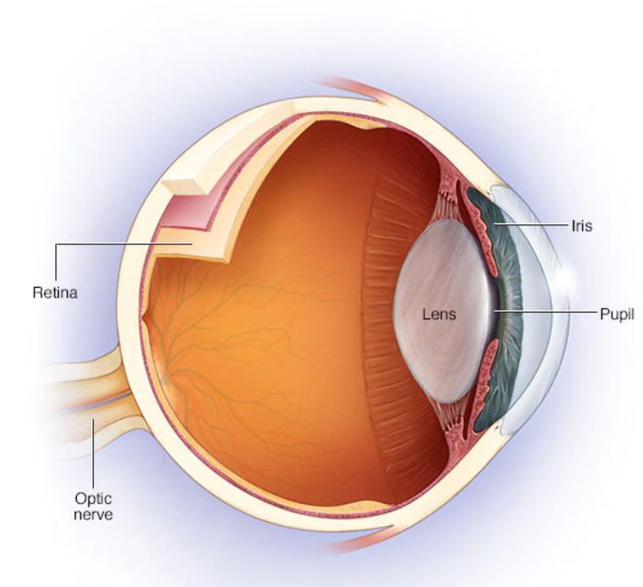

What is Optic Neuritis?
 Optic neuritis occurs when swelling (inflammation) damages the optic nerve — a bundle of nerve fibers that transmits visual information from your eye to your brain. Common
symptoms of optic neuritis include pain with eye movement and temporary vision loss in one eye.
Signs and symptoms of optic neuritis can be the first indication of multiple sclerosis (MS), or they can occur later in the course of MS.
MS is a disease that causes inflammation and damage to nerves in your brain as well as the optic nerve.
Besides MS, optic nerve inflammation can occur with other conditions, including infections or immune diseases, such as lupus. Rarely,
another disease called neuromyelitis optica causes inflammation of the optic nerve and spinal cord.
Most people who have a single episode of optic neuritis eventually recover their vision without treatment. Sometimes steroid medications
may speed the recovery of vision after optic neuritis.
Image slider above illustrates the effecs of optic neuritis.